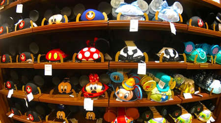

Disneyland Secrets


One of my favorite traditions growing up was at the end of very Disneyland trip, my grandparents would let me and my sister pick out souvenir. The normal go to was a stuffed animal of Chip and Dale as they are my favorite Disney characters. As I got older and realized that I had enough Chip and Dale stuffed animals, I wanted to add settle hints of Disney in my home. Here's a list of my 3 favorite Disney themed souvenirs that you can only get at Disneyland:
Now you know what to buy but do you know where to get them? What's great about Disneyland is that they have so many specialty stores but it can overwhelming on knowing where to get what. Here's a breakdown of my favorite specialty shops: